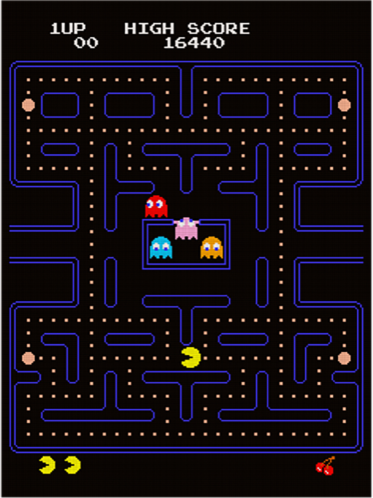

Reading 16: Computer graphics, part 1
What is it about animation, graphics, illustrations, that create meaning?
And this is an important question to ask and answer
because the more we understand how the brain creates meaning,
the better we can communicate, and, I also think,
the better we can think and collaborate together.
- Tom Wujec
Overview
In this reading, we'll be discussing the basics of computer graphics,
and then we'll introduce Python's tkinter graphics library,
which will provide us with the tools we need
to write graphics code and simple graphical interfaces.
Topics
-
Computer graphics
-
Graphics programming with
tkinter
About graphics
You probably have a pretty good idea of what "computer graphics" is. Computer graphics is all around us. Every time we interact with a computer, we are using a graphical user interface (also known as a "GUI").1 Every time we play video games, we are interacting with a graphics engine. And many movies are largely or even entirely created using "CGI" (Computer Generated Imagery), especially animated movies.
Loosely speaking, when we talk about "computer graphics" we are talking about the process by which images are created and manipulated on computer monitors. These images can be static (unchanging) or dynamic (changing); in the latter case we refer to the images as an "animation". Computer graphics also involves the process by which humans interact with images on a computer screen.
About user interfaces
A user interface is the way that the user(s) of a program interact with the program. The two main categories of interface are text-based interfaces and graphical interfaces.
Text-based interfaces
So far, all of our programs have been text-based, which just means that they can be run from a terminal and they only input and output text (sometimes coming from or going to a file, sometimes coming from or going to the terminal directly). Broadly speaking, there are two types of text-based interfaces:
- batch-mode interfaces
- interactive interfaces
A batch-mode interface is the simplest kind of interface. This is a program that runs without any user involvement. One example might be a program which generates the value of \(\pi\) to 1000 digits. While the program is running, the user doesn't have to do anything, and the program prints out the result at the end. Another example might be a data analysis program which reads in a list of temperatures from a file, computes their average, and prints the result out. Again, the user doesn't do anything while the program is running.
An interactive interface is where the user and the program interact while the program is running. A chess program is a good example of an interactive interface. The user and the program "take turns" so that at certain times, the program is computing something, while at other times, the user is figuring out their move and the program is waiting for them to enter the move. (Of course, most chess programs are not text-based, but they could be.) Another example of a program with an interactive text-based interface is a text editor (like Neovim) that runs entirely inside a terminal. And another one is the Python interpreter when you run it from a terminal without a file argument.
Graphical user interfaces
The most common kind of interactive interface is a graphical user interface which users will interact with directly while the program is running. The program provides various visual entities (called widgets) that users can interact with. These include:
- windows
- buttons
- scrollbars
- menus
- sliders
- drawing areas
- labels
- drop-down lists
and so on. In addition to this, the program also displays output visually. This can include images, animations, or both.
Graphical interfaces are designed to make it feel "natural" for users to interact with programs. They often use "visual metaphors" such as windows and trash cans to make the interface feel more comfortable. On the other hand, programming a GUI can be extremely complex due to the need to anticipate and react to everything a user can reasonably do.
We won't spend much time discussing how to create GUIs in these readings.
(If you're interested, we will have references
to the tkinter documentation below
that will describe the GUI elements of tkinter in detail.)
On the other hand, we will spend a considerable amount of time on graphics programming in general. This isn't just because we really like graphics (though we do) but mainly because graphics programming leads us naturally into a large number of interesting and useful programming topics, which is our real focus.
2D and 3D graphics
Another way to categorize graphics programming is in terms of the images produced. 2D (two-dimensional) graphics creates two-dimensional (flat) images or animations. 3D (three-dimensional) graphics creates the illusion of three-dimensional images or animations. Of course, since computer monitors are two-dimensional, 3D images are simulated instead of being "real" three-dimensional images. On the other hand, our retinas are also basically flat, so it isn't hard to trick a user into thinking that an image is realistic. To get even more realistic, you can wear a binocular (both eyes) virtual reality headset, which presents different images to each eye in a way that closely simulates what a person would see if they were actually seeing a 3D scene in real life. This can create an extremely realistic and immersive experience where you feel like you really are in the virtual world being simulated.
Video games provide great examples of all kinds of graphics. Here's a famous 2D video game:

Here are images from two famous (and related) 3D video games:
3D graphics is a fascinating and highly mathematical field. In these readings, we will restrict ourselves to 2D graphics (including animation) along with some user interface features.
Python and the tkinter library
Python, from its inception,
was designed as a language that could be extended
by linking to libraries written in the C language.
A lot of graphics libraries either are written in C
or expose a C language interface,
and therefore there are a lot of ways to do graphics in Python.
In these readings, we choose the simplest approach,
which is to use the tkinter library.
Origins of tkinter
The tkinter library has an unusual history.
In the mid-1990s, a computer scientist named John Osterhout
designed one of the first scripting languages,
which he called Tcl
(pronounced "tickle"; it stands for Tool command language).
This language (which is still around) is quite weak compared to Python,
but it did have one very useful feature: a graphics library called Tk
(which stands simply for a graphics Toolkit).
With Tk, you could write a graphical interface
in a very small number of lines of code,
and it was very usable (and easy to extend and maintain).
Before Tk, writing even a simple GUI was an arduous task
sometimes requiring more than 100 lines just to put a window on the screen!
So even programmers who weren't particularly fond of Tcl
would use it just so they could write a GUI in Tk.
When Python became popular, a programmer named Fredrik Lundh
had the brilliant idea of providing a way to use
the Tk graphics toolkit from inside Python.
The code that does this is called tkinter,
which is short for "Tk Interface".
This library is unusual: tkinter is Python code
which invokes Tk code which invokes Tcl code
which ultimately uses graphics libraries written in C.
Somehow it all works.
Why tkinter and not some other graphics library?
As mentioned above,
Python has numerous graphics libraries that can be used
to write GUIs and graphical programs.
In addition to tkinter, some other ones include:
-
PyQT, a Python binding to the "QT" graphics system
-
WxPython, a Python binding to the "WxWindows" graphics system
-
Kivy, a cross-platform Python library for touch-based interfaces
All of these have more features than tkinter,
which is very crude by comparison.
So why are we using it?
The main reasons are:
-
It's easier to install. Installing any of the other libraries can be very challenging, and we would prefer not to put you through this. In contrast, most installations of Python include
tkinterby default, although not all of them do.Note
You may be running a Python installation which does not have
tkinterinstalled. To find out, start the Python interpreter and type:If this gives you an error,
tkinteris not installed. If so, you can ask the TAs or the instructors to help you install it. The process is very dependent on the details of the installation and your operating system (Windows, MacOS, or Linux). -
It's simpler. Some graphics libraries require a deep knowledge of object-oriented programming before you can do anything. Although one goal of CS 1 is to give you this knowledge, a nice feature of
tkinteris that you can use it even without knowing object-oriented programming. -
It's good enough for what we want to do.
-
We can extend it in interesting ways, and learn a lot about Python programming in the process.
However, if after taking CS 1
you decide you want to write a program in Python
with a sophisticated graphical interface,
we strongly recommend you check out the alternatives listed above
before deciding to use tkinter.
What tkinter provides
tkinter provides a number of tools for writing programs that use graphics:
-
GUI "widgets"
- buttons, menus, scrollbars, etc.
-
a "canvas" widget upon which arbitrary drawings can be created
- using lines, circles, ovals, rectangles, images, text, etc.
-
various ways to capture user interactions
- key presses, mouse clicks, etc.
For now, we will concentrate on the canvas widget and on drawing simple 2D pictures. We'll also show how to get a program to respond to actions (e.g. key presses on the keyboard).
Pixel coordinates
We're almost ready to start writing code, but before we do, we have to have a way to represent locations on the screen. The way we will use is called pixel coordinates. A pixel (short for "picture element") is a very tiny roughly square-shaped segment of a computer monitor which can have any of a large number of colors. (Most computers now allow 24-bit colors for each pixel, which works out to over 16 million different possible colors.) The monitor display itself is made up of millions of these tiny pixels, arranged in a rectangular grid. Even though the size of a pixel is not standardized, we often use pixel numbers when specifying how large/wide/high we want some graphical entity to be. We identify any particular pixel in the grid by its pixel coordinates.
Representation
Pixel coordinates are represented by a tuple of two non-negative integers (0 or greater): the X-coordinate (horizontal coordinate) and the Y-coordinate (vertical coordinate). The way a pixel's pixel coordinates are determined is as follows:
-
The upper-left corner of the display (the "origin") has the coordinates
(0, 0). -
The X-coordinate increases as we move to the right.
-
The Y-coordinate increases as we move downwards.
So, for instance, if you start at (0, 0) and increase the X-coordinate to (100, 0) (say), you move 100 pixels to the right. If you start at (0, 0) and increase the Y-coordinate to (0, 100), you move 100 pixels down.
Here's a picture which gives you the general idea:
The pixel at (2, 1) has X-coordinate 2 and Y-coordinate 1,
and the pixel at (3, 5) has X-coordinate 3 and Y-coordinate 5.
This is a bit like the Cartesian coordinate system that you're probably familiar with from math courses, where it's used to draw graphs of functions. However, there are important differences:
-
Pixel coordinates are always integers.
-
Pixel coordinates are never negative.
-
The Y-coordinate in pixel coordinates increases downwards instead of up.
Relative and absolute coordinates
Most computers run multiple programs at the same time, placing the graphics for each program in a separate rectangular "window". Pixel coordinates can thus be either
- absolute, meaning that they represent a position on the entire monitor, or
- relative to the window in which a program is running
In absolute coordinates, the upper left-hand corner of the monitor is location (0, 0). In relative coordinates, the upper left-hand corner of the application window (the window in which the program executes) is location (0, 0). We will only be working with relative coordinates.2
Event loops
When a graphical program with a GUI is running, typically it will wait until the user activates one of its widgets. For instance, the user can click on a button, select an item in a drop-down list, move the mouse cursor over a drawing area, etc. These user actions are referred to as events. When the program detects an event, it will do something in response, then go back to waiting (often called "listening") for events. This process is called an event loop. Event loops are very commonly used when running a graphical interface.
However, it's rarely that simple. Often the program needs to be doing things even while waiting for new events from the user. For instance, a video game may have things happening in the video game "world" between user events, and those have to be simulated whether or not the user is doing anything. So an event loop is not going to be the only thing that is happening in the program in that case.
Python programs that use tkinter are oriented around an event loop.
We will be able to use the event loop
both for purely event-driven programs
and also for programs that need to do things between user events.
Program 1 (tkinter1.py)
Finally we get to look at some code! 
Here's a minimal tkinter program called tkinter1.py:
There's a lot going on here, so we'll break it down line-by-line. But first, let's see what this program actually does. When we run it, we will see a window come up that looks like this:
Meanwhile, the terminal will display the message Press <return> to quit.
Once the user presses the return key,
the window will disappear and the program will exit.
This is actually pretty cool! In seven lines of code we brought up a window and drew a red square in one corner of the window. Let's see what these lines mean.
-
from tkinter import *This line (obviously) imports the
tkinterlibrary. Because we will be using a lot of things from this library, we import everything using the wildcard (*). (Normally we don't like to do this, but it won't cause problems here.) -
root = Tk()This line creates the root window of the application, which we call
root. It does this by called theTkfunction.3 This line by itself will bring up a new blank window, which by default will have the dimensions 200 pixels wide by 200 pixels high. -
root.geometry('800x600')We want our program to have a bigger window than 200x200 pixels, so we specify the desired dimensions using the
geometrymethod. Here, the dimensions we want are 800 pixels in the X dimension by 600 pixels in the Y dimension. (The root window is an object, so it can have methods.) -
c = Canvas(root, width=800, height=600)The root window is great and all, but we want to draw geometrical shapes, and for that, we will need a drawing surface. This is provided by the
tkinterCanvas"widget" (which for our purposes is just a Python object). This line creates a newCanvaswhose parent is the root window (this means that it will be located inside the root window) and since its dimensions are the same as those of the root window, it will completely cover it. The Canvas object is given the namecso we can call methods on it.Note that we are specifying the dimensions in a different way than we did for the
root.geometrymethod. This way uses what are called arguments, which we'll describe below. (These are basically just function arguments with names.)After this line executes, the Canvas will exist but you can't yet draw on it, because it hasn't been positioned on the screen.
-
c.pack()The canvas
packmethod sets the position of the canvas relative to its parent object (the root window). Once this is done (and not before) anything drawn on the canvas will be visible. Thepackmethod is one of a number of methods whose purpose is to position graphical objects relative to their parent object. This method is particularly easy to use, because it does the positioning automatically so as to fit everything into the available space. Since the canvas and the root window are the same size, this is easy: the canvas just completely covers the root window. -
r = c.create_rectangle(0, 0, 50, 50, fill='red', outline='red')This line does some actual drawing. As the name indicates,
create_rectangledraws a rectangle on the canvas (namedc). The first two arguments (here, both are0) are the X and Y pixel coordinates of the upper left-hand corner of the rectangle. The second two arguments (here, both are50), are the X and Y pixel coordinates of the lower-right corner of the rectangle. Thefillkeyword argument sets the color inside the rectangle to red, and theoutlinekeyword argument does the same for the rectangle's outline. (If theoutlinekeyword argument were omitted, the outline would be black.)The return value of this method is assigned to the name
r.ris actually a handle to the rectangle. We'll explain what handles are and what you can do with them in an upcoming reading. -
input("Press <return> to quit")This line serves an important purpose. It is there to keep the program from exiting! If it was removed, running the program would, at best, flash the window up for a very short period of time and then exit. But as long as the
inputfunction is waiting for the user to enter something in the terminal, the graphics canvas will remain visible. Once you hit the return key, the program will be done, the window will close and the program will exit.This is not, by any means, the best way to run a graphics program. We will shortly see better ways of doing this.
Note
If you try running this program inside an IDE
(Integrated Develoment Environment;
an example for Python would be
PyCharm),
it may not work the way we've described
because the last line won't cause the program to pause.
This won't be an issue
once we've shown you how to use the event loop in tkinter,
which should work anywhere.
However, for the time being
you can always run the programs from the terminal,
which should also work.
Adding more stuff to the canvas
We are going to quickly show you some tkinter programs
along with their graphical output.
We won't say too much about them because there isn't much new to say.
Some will use different methods on the canvas object,
but you should be able to figure out what they are doing.
If you need to, you can read the tkinter documentation linked to below
to get more information.
Program 2 (tkinter2.py)
from tkinter import *
root = Tk()
root.geometry("800x600")
c = Canvas(root, width=800, height=600)
c.pack()
r = c.create_rectangle(0, 0, 50, 50, fill="red", outline="red")
r2 = c.create_rectangle(0, 50, 50, 100, fill="blue", outline="blue")
r3 = c.create_rectangle(50, 0, 100, 50, fill="green", outline="green")
r4 = c.create_rectangle(50, 50, 100, 100, fill="yellow", outline="yellow")
input("Press <return> to quit.")
Program 3 (tkinter3.py)
from tkinter import *
root = Tk()
root.geometry("800x600")
c = Canvas(root, width=800, height=600)
c.pack()
dim = 50 # side length of squares in pixels
def square(x, y, color):
"""Draw a colored square."""
c.create_rectangle(x * dim, y * dim, (x + 1) * dim, (y + 1) * dim,
fill=color, outline=color)
def big_square(row, col):
"""Draw a big square made out of little squares."""
row *= 2
col *= 2
square(row, col, 'red')
square(row + 1, col, 'blue')
square(row, col + 1, 'green')
square(row + 1, col + 1, 'yellow')
def draw():
"""Draw the entire drawing."""
for row in range(8):
for col in range(6):
big_square(row, col)
draw()
input("Press <return> to quit.")
Program 4 (tkinter4.py)
This program introduces the canvas create_line method.
from tkinter import *
root = Tk()
root.geometry('800x600')
c = Canvas(root, width=800, height=600)
c.pack()
line1 = c.create_line(0, 0, 800, 600, fill='blue', width=3)
line2 = c.create_line(800, 0, 0, 600, fill='red', width=6)
input('Press <return> to quit.')
Program 5 (tkinter5.py)
The create_line method can include the coordinates of multiple points,
which are joined end-to-end to create multiple lines.
from tkinter import *
root = Tk()
root.geometry('800x600')
c = Canvas(root, width=800, height=600)
c.pack()
line1 = c.create_line(100, 100, 400, 100, 100, 400, 400, 400,
fill='blue', width=3)
input('Press <return> to quit.')
Program 6 (tkinter6.py)
The canvas create_oval method is like create_rectangle
but creates ellipses (ovals) instead of rectangles.
from tkinter import *
root = Tk()
root.geometry('800x600')
c = Canvas(root, width=800, height=600)
c.pack()
oval = c.create_oval(100, 100, 700, 500, outline='blue', fill='yellow', width=4)
input('Press <return> to quit.')
Program 7 (tkinter7.py)
This program shows the relationship
between create_oval and create_rectangle.
from tkinter import *
root = Tk()
root.geometry('800x600')
c = Canvas(root, width=800, height=600)
c.pack()
oval = c.create_oval(100, 100, 700, 500, outline='blue', width=4)
rect = c.create_rectangle(100, 100, 700, 500, outline='red', width=4)
input('Press <return> to quit.')
Program 8 (tkinter8.py)
You can easily create a bullseye pattern using create_oval and a loop.
from tkinter import *
root = Tk()
root.geometry('800x800')
c = Canvas(root, width=800, height=800)
c.pack()
ovals = []
for i in range(50, 350, 50):
x1 = 100 + i
y1 = x1
x2 = 700 - i
y2 = x2
oval = c.create_oval(x1, y1, x2, y2, outline='blue', width=4)
input('Press <return> to quit.')
Event handling
OK, we've seen that there are several different shapes
(rectangles, ovals, lines) you can draw on a tkinter canvas,
and you can control various features of them (size, color, position)
depending on the arguments you pass to the methods that create the shapes.
But these images are completely static; they are generated and that's it.
We'd like to be able to interact with these shapes in various ways:
- create them in response to user input
- move them around
- change their color
- delete them
etc. While we're at it, we would also love to get rid of the
line we've had to include at the end of all our programs. In this section we'll show you how to do this.
Earlier in this reading we mentioned that
tkinter is structured around an event loop.
But our tkinter programs so far
haven't had anything that looks like an event loop!
What's going on?
Basically, they didn't have an event loop
because we didn't ask them to create one.
To do this, we have to call a special method on the root object:
(We'll use this in place of the input line above.)
This is a very unusual method: it never exits!
It starts an "infinite loop" which listens for user events
(key presses, mouse clicks or movements, etc.)
and does something in response to certain events.
As we've seen before when we discussed infinite loops,
there usually is a way to break out of an infinite loop.
In a while True: loop, for instance,
we could use break to get out of the loop.
Similarly, we will be able to use certain events
to signal that we want to exit the loop.
Normally, when we leave the event loop, we exit the program.
So the program really consists of these parts:
-
Set up the program.
-
Specify which events the program will respond to, and how it will respond to them.
-
Start the event loop.
-
When the event loop is done, exit the program.
But if we just replace the
line with
we haven't done steps 2 and 4. So after we've created our canvas and whatever is on it, the event loop will start and the window will stay up. However, it's not obvious how to exit the program! We can always manually close the root window and use control-C in the terminal to force Python to exit, but this isn't any better than what we had. We need a convenient way to exit our program. To do this, we will define an event and the code that handles that event.
Our first event: q to quit
We'll modify our original tkinter program to use mainloop.
This gives us this program (tkinter9.py):
from tkinter import *
root = Tk()
root.geometry('800x600')
c = Canvas(root, width=800, height=600)
c.pack()
a = c.create_rectangle(0, 0, 50, 50, fill='red', outline='red')
root.mainloop() # <-- changed
We want to have some way to quit the program
that is under the control of the user.
We'll use this very simple system:
when the user types the letter q on the keyboard,
the program will interpret that as an order to "quit" the program,
and the program will exit.
So the event our event loop will need to respond to is
"typing the q key".
This leads to two questions:
-
How do we tell
tkinterthat this is the event we want the event loop to listen for? -
How do we specify that when the
qkey is typed, the program should exit?
And there is also one more thing we need to specify:
Which graphical object will handle the event?
It turns out that the Canvas object in tkinter
isn't capable of handling key press events
(which is what "typing a key" events are called),
so the only graphical object left is the root (root window) object.
Fortunately, this object can handle key press events.
The bind method
We specify the event to be handled and how to handle it
by calling the bind method on the root object.
We only have to add one line of code:
This line must come before the mainloop line,
but after creating the root window.
Now our program (called tkinter10.py) looks like this:
from tkinter import *
root = Tk()
root.geometry('800x600')
c = Canvas(root, width=800, height=600)
c.pack()
a = c.create_rectangle(0, 0, 50, 50, fill='red', outline='red')
# Bind the event "type the q key" to the `quit` function:
root.bind('<q>', quit)
root.mainloop()
The first argument to root.bind is the event to handle.
Events are specified by strings
with a particular syntax that makes sense to tkinter.
The event "type the q key" (or more technically "press the q key")
is specified with the string '<q>'.
(Despite this, you don't have to type the angle brackets
when you want to quit the program!
Just type the q key to trigger this event.)
The second argument is what to do when the event loop detects the event,
and this is where things get interesting.
You see that the second argument is quit,
which reasonably implies that typing q should cause the program to quit.
But what is quit here?
It turns out that Python has a built-in function called quit.
It's usually called with no arguments, like this:
When this line executes, the program will exit.
However, the argument to root.bind was not quit() but quit
(without the parentheses).
What does that mean?
Functions as objects
Python has an interesting and very powerful feature that many computer languages don't have: functions can be treated as objects in their own right. When you call a function, you have to put the arguments to the function in parentheses, separated by commas. Even if the function has no arguments, you still have to use the parentheses to call the function. For instance:
To call this function, you would have to write:
and not
If you leave off the parentheses, it isn't a syntax error, but it won't call the function either. Instead, the function will be treated as an object. In this case, what will happen is that Python will print a representation of the function:4
This isn't very interesting.
But having function objects as arguments to other functions is interesting.
For instance, the quit in the line:
passes the quit function as an argument to the root.bind method.
Why do we do this?
The reason is so that the event loop can store this function for later,
and when a press-the-q-key event occurs, it can retrieve the quit
function and call it, thus making the program exit.
Being able to use functions as objects is incredibly powerful. In fact, there is a whole style of programming that uses this as its primary tool: functional programming.
Note
If you take the CS 4 and CS 115 courses (both taught by Mike), you will learn all about functional programming using the computer languages OCaml and Haskell. Python is not the best language for functional programming, but it does support it to some extent. We'll talk more about Python's functional programming features in later readings.
Try this at home
Copy the version of the program with the root.bind and root.mainloop
into a file called tkinter_mainloop.py.
Run it from the terminal by typing
See that the window stays up until you type the q key,
at which point the program will exit.
Note
Make sure that when you type the q key,
the program window is selected (not covered up by any other window)
and the cursor is inside the window.
If this isn't the case, typing the q key may not do anything.
Once you do this successfully, look at the terminal where you ran the program. You should see something like this printed out:
What's this?
It turns out that the quit function is normally called in one of two ways:
- with no arguments i.e.
quit(), or - with one integer argument i.e.
quit(0)orquit(1).
The convention is that if you supply a 0 argument to quit,
you are indicating that the program was "successful",
and if you give a nonzero integer argument,
you are indicating that some kind of an error occurred.5
If quit is called with no arguments, it's equivalent to quit(0).
But if quit gets a non-integer argument,
it doesn't know what to do with it,
so it just prints it to the terminal and exits.
That's what must have happened here.
And apparently,
the quit function was called with something that, when printed,
yielded the string
What this means is that quit was called with one argument,
which was a KeyPress event object.
This object is how tkinter represents the event corresponding to
typing a key at the keyboard (in this case the q key).
tkinter event objects often have useful information associated with them,
as we will see.
In this case, there isn't any information we need;
we already know that this event
could only have been created by typing the q key.
Later, we will see cases
where event objects have information that we absolutely need
in order to allow us to do what we want to do in our program.
To summarize:
-
root.bind('<q>', quit)tells the root object to listen for the event where theqkey is typed on the keyboard. -
root.mainloop()starts the event loop. -
When the user types the
qkey, aKeyPressevent object is created containing information about the event (like which key was pressed). -
The event loop code detects this event, looks up in some kind of internal table to see if this event has been associated with some action using the
bindmethod. It finds out that it is supposed to call thequitfunction in response to this event. -
The event loop calls
quit, passing it theKeyPressevent object as its argument. In pseudocode, this is something like callingquit(KeyPressEvent('q')). -
The
quitfunction doesn't know what to do with key press event objects, so it just prints the object to the terminal and causes the program to exit.
Towards a better event handler
The quit function which is the second argument to the root.bind call
is known as an event handler.
It "handles" the "event" where the q key is pressed.
However, it isn't a good event handler,
because it prints out an annoying line that we don't need.
We would like to fix that.
And we will, in the next reading!
tkinter documentation
Here are some links to tkinter reference documentation:
The first link is probably the best overall,
having been written by the original author of tkinter.
However, it's very old and may not be completely accurate.
The last link has links to a large amount of material on tkinter.
You can use these links
(among other things e.g. doing a web search for the information you need)
to look up information on graphical widgets
we haven't described in these readings or in class.
Here are a couple of tkinter tutorials:
Further documentation can be obtained by searching for
"Python tkinter documentation" using any search engine.
-
You can pronounce "GUI" as either "gooey" or "gee you eye".]. ↩
-
Very few programs need to care about absolute coordinates. One kind of program that does is a window manager, which is a program which is used to position application windows. ↩
-
Actually, it's not really a function but a "constructor method", which we will learn about in a few readings. It won't hurt to think about it as a function for now. ↩
-
The hexadecimal number
0x10180baf0is where the function is located in memory. That's almost never important. ↩ -
This convention comes from the early days of Unix, and basically specifies the "return value" of the entire program. You can use these integer return values, but learning how to do this would take us beyond the scope of these readings. ↩